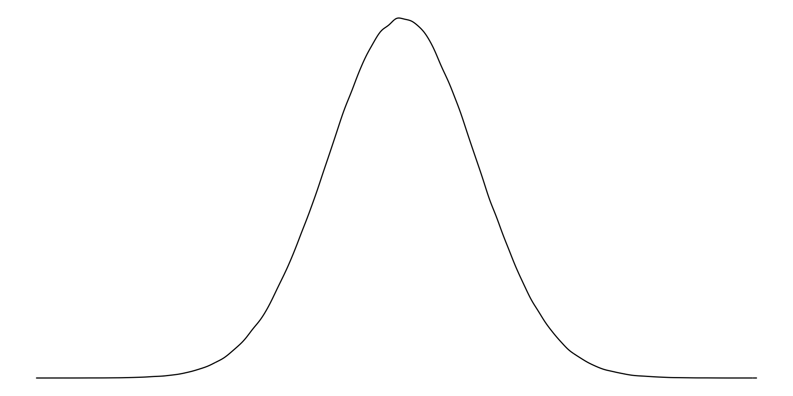
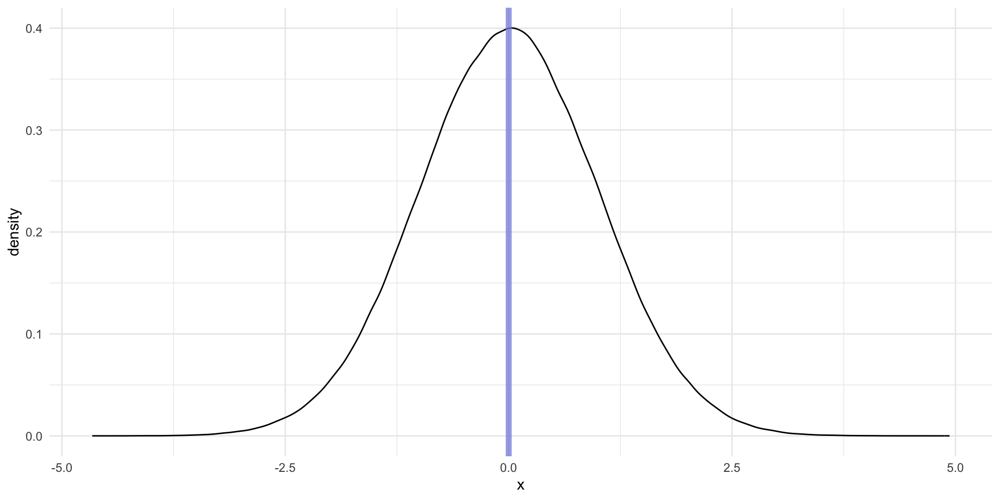

library(tidyverse)
library(poliscidata)
library(wbstats)
library(janitor)
library(skimr)
library(countrycode)
library(ggridges)
library(ggdist)
library(MetBrewer)
library(patchwork)Descriptive Statistics
Readings
Class slides
Section
Prerequisites
How will what you learn this week help your research?
You have an interesting question that you want to explore. You have some data that relate to that question. Included in these data are information on your outcome of interest and information on the things that you think determine or shape that outcome. You think that one (or more) of the drivers is particularly important, but no one has yet written about it or proven its importance. Brilliant! What do you do now?
The first step in any empirical analysis is getting to know your data. I mean, really getting to know your data. You want to dig into it with a critical eye. You want to understand any patterns lurking beneath the surface.
Ultimately, you want to get a really good understanding of the data generation process. This process can be thought of in two different and important ways. First, you want to understand how, out there in the real world, your outcome and drivers come to be. For example, if you are interested in political voting patterns, you want to know the nitty gritty process of how people actually vote. Do they have to travel long distances, stand in long queues, fill out a lot of paperwork? Are there age restrictions on their ability to vote? Are there more insidious restrictions that might suppress voting for one particular group in the electorate?
You can use the skills we will discuss this week to help you answer these questions. For example, you can determine whether there are relatively few young voters compared to older voters. Then you can explore why this might be. In turn, your growing expertise in and understanding of the data generation process should inform your exploration of the data. You might note that people have to wait in long queues on a Tuesday to vote. Does this impact the number of workers vs. retirees who vote?
Now, this is made slightly more tricky by the second part of your exploration. You need to understand how your variables are actually measured. How do we know who turns out to vote? Did you get access to the voter file, which records each individual who voted and some interesting and potentially relevant demographic information about them? Or are you relying on exit polls, that only include a portion of those who voted? Were the people included in the polls reflective of the total voting population? What or whom is missing from this survey? Of course, if your sample is not representative, you might find some patterns that appear to be very important to your outcome of interest but are, in fact, just an artifact of a poorly drawn sample.
This week you will be introduced to the first part of this process: data exploration. We use descriptive statistics to describe patterns in our data. These are incredibly powerful tools that will arm you with an intimate knowledge of the shape of your variables of interest. With this knowledge, you will be able to start to answer your important question and potentially identify new ones. You will also be able to sense-check your more complex models and pick up on odd or incorrect relationships that they may find.
As you make your frequency tables and histograms and very elaborate dot plots and box charts, keep in mind that these tools are useful for your interrogation of the data generation process. Be critical. Continue to ask whether your data allow you to detect true relationships between your variables of interest. Build your intuition for what is really going on and what factors are really driving your outcome of interest.
Let’s get started.
Describing your data
Descriptive statistics can be used to understand single variables and how any number of variables of interest relate to one another. The level of complexity involved in understanding these data and their relationships tend to increase with the number of variables you include. Today, we will look at single variables (for example, the age of respondents to a survey or how much each country spends on education in a year). Next week we will explore the relationship between two variables (for example, an individual’s party affiliation and their level of support for abortion access).
Your variables are defined in terms of a unit of observation or analysis. These could include individuals, households, congressional districts, states, or countries. The unit of analysis you adopt should be relevant to your theory. For example, if you are interested in understanding which individuals are more susceptable to the different strategies rebel groups use to recruit individuals to fight, you probably want individual-level data. If you are interested in determining what drives countries to war with one another, you probably want country-level data (or leader-level data, or voter-level data?).
The important take-away here is that you should start with your theory. You should build a data set that reflects your theory.
Different types of data
The ways of describing your data depend on the type of variable. You can have categorical or continuous variables.
Categorical variables are discrete. They can be unordered (nominal) - for example, the colour of cars - or ordered (ordinal) - for example, whether you strongly dislike, dislike, are neutral about, like, or strongly like Taylor Swift.
Dichotomous (or binary) variables are a special type of categorical variable. They take on one of two values. For example: yes or no; at war or not at war; is a Swifty, or is not a Swifty.
Continuous variables are, well, continuous. For example, your height or weight, a country’s GDP or population, or the number of fatalities in a battle.
Continuous variables can be made into (usually ordered) categorical variables. This process is called binning. For example, you can take individuals’ ages and reduce them to 0 - 18 years old, 18 - 45 years old, 45 - 65 years old, and 65+ years old.
You lose information in this process: you cannot go from 45 - 65 years old back to the individuals’ precise age. In other words, you cannot go from a categorical to continuous variable.
Let’s take a look at how you can describe these different types of variables in turn, using real-world political science examples.
Describing categorical variables
Simply put, for categorical variables we are interested in the count and/or percentage of cases that fall into each category.
Later, we will ask interesting questions using these summaries. These include whether differences between the counts and/or percentages of cases that fall into each category are meaningfully (and/or statistically significantly) different from one another. This deceptively simple question serves as the foundation for a lot of political science (particularly comparative) research.
Case study: American National Election Survey
For this section, we will be working with the American National Election Survey to explore how to produce useful descriptive statistics for categorical variables using R. The ANES polls annually individual Americans about their political beliefs and behavior.
We can access the 2012 survey using the poliscidata package:
poliscidata::nesTake a look at the many different bits of information collected about each respondent using
?nes.
Let’s look at how many individuals of different ages took part in the survey in 2012. The survey records the age of each respondent within six different brackets and reports that information in the dem_age6 variable.
Frequency distribution
We can take advantage of janitor::tabyl() to quickly calculate the number and proportion of respondents in each age bracket.
tabyl(nes, dem_age6) dem_age6 n percent valid_percent
17-29 936 0.15821501 0.1598634
30-39 862 0.14570656 0.1472246
40-49 948 0.16024341 0.1619129
50-59 1312 0.22177147 0.2240820
60-69 1105 0.18678161 0.1887276
70-older 692 0.11697093 0.1181896
<NA> 61 0.01031102 NANote:
valid_percentprovides the proportion of respondents in each age bracket with missing values removed from the denominator. For example, the NES survey had 5,916 respondents in 2012, but only 5,855 of them provided their age. 936 responded that they are 17 - 29 years old. Therefore, the17-29proportion (which is bounded by 0 and 1, whereas percents are bounded by 0 and 100) is 936 / 5,916 and its valid proportion is 936 / 5,855.
Visualizing this frequency
It is a bit difficult to quickly determine relative counts. Which age bracket has the most respondents? Which has the least? Are these counts very different from each other.
I highly recommend visualizing your data. You will get a much better sense of it. We can easily visualize this frequency table. I recommend using a bar chart to show clearly relative counts.
nes |>
tabyl(dem_age6) |>
ggplot(aes(x = n, y = dem_age6)) +
geom_col() +
theme_minimal() +
labs(
x = "Count of respondents",
y = "Age bracket"
)
Describing continuous variables
We need to treat continuous variables differently from categorical ones because they cannot be meaningfully bound together and compared. For example, imagine making a frequency table or bar chart that counts the number of countries with each observed GDP. You would have 193 different counts of one. Not very helpful!
We can get a much better sense of our continuous variables by looking at characteristics of the distribution of these variables across the range of all possible values they could take on. Phew! Let’s make sense of this using some real-world data.
Case study: Comparing countries’ spending on education
For this section, we will look at each country’s spending on education as a percent of their gross domestic product. We will use wbstats::wb_data() to collect these data.
perc_edu <- wb_data(
"SE.XPD.TOTL.GD.ZS", start_date = 2020, end_date = 2020, return_wide = F
) |>
transmute(
country,
region = countrycode(country, "country.name", "region"),
year = date,
value = value / 100
)
perc_edu# A tibble: 217 × 4
country region year value
<chr> <chr> <dbl> <dbl>
1 Afghanistan South Asia 2020 0.0286
2 Albania Europe & Central Asia 2020 0.0310
3 Algeria Middle East & North Africa 2020 0.0704
4 American Samoa East Asia & Pacific 2020 NA
5 Andorra Europe & Central Asia 2020 NA
6 Angola Sub-Saharan Africa 2020 0.0242
7 Antigua and Barbuda Latin America & Caribbean 2020 0.0345
8 Argentina Latin America & Caribbean 2020 0.0502
9 Armenia Europe & Central Asia 2020 0.0271
10 Aruba Latin America & Caribbean 2020 NA
# ℹ 207 more rowsI have converted these percentages (0 - 100) to proportions (0 - 1) for ease of interpretation. I have also added each country’s region (using countrycode::countrycode()) so that we can explore regional trends in our data.
We can get a good sense of how expenditure varied by country by looking at the center, spread, and shape of the distribution.
Histogram
ggplot(perc_edu, aes(x = value)) +
geom_histogram() +
theme_minimal() +
labs(
x = "Expenditure on education as a proportion of GDP",
y = "Count"
) +
scale_x_continuous(labels = label_percent())
Take a look at
?geom_histogramto find the arguments needed to change the bin width of your histograms.
Density curves
ggplot(perc_edu, aes(x = value)) +
geom_density() +
theme_minimal() +
labs(
x = "Expenditure on education as a proportion of GDP",
y = "Count"
) +
scale_x_continuous(labels = label_percent())Understanding distributions
Because continuous variables are best described using their distribution, we can use the shape of that distribution to better understand our individual variables and compare them to others. Is the distribution symmetric or skewed? Where are the majority of observations clustered? Are there multiple distinct clusters, or high points, in the distribution?
Normal distribution
tibble(x = rnorm(n = 1e6)) |>
ggplot(aes(x = x)) +
geom_histogram() +
theme_minimal()
Right skewed distribution
tibble(x = rbeta(1e6, 1, 10)) |>
ggplot(aes(x = x)) +
geom_histogram() +
theme_minimal()
Left skewed distribution
tibble(x = rbeta(1e6, 10, 1)) |>
ggplot(aes(x = x)) +
geom_histogram() +
theme_minimal()
Measures of central tendency: mean, median, and mode
We can also use measures of central tendency to quickly describe and compare our variables.
Mean
The mean is the average of all values:
\[ \bar{x} = \frac{\Sigma x_i}{n} \]
In other words, add all of your values together and then divide that total by the number of values you have.
In R:
mean(perc_edu$value, na.rm = T)[1] 0.04639309Note: if you do not use the argument
na.rm(read NA remove!), you will get anNAif any exist in your vector of values. This is a good default! You should be very aware of missing data points.
Median
The median is the mid-point of all values.
To calculate it, put all of your values in order from smallest to largest. Identify the value in the middle. That’s your median.
In R:
median(perc_edu$value, na.rm = T)[1] 0.04461425Mode
The mode is the most frequent of all values.
To calculate it, count how many times each value occurs in your data set. The one that occurs the most is your mode.
This is usually a more useful summary statistic for categorical variables than continuous ones. For example, which colour of car is most popular? Which political party has the most members?
In R:
x <- c(1, 1, 2, 4, 5, 32, 5, 1, 10, 3, 4, 6, 10)
table(x)x
1 2 3 4 5 6 10 32
3 1 1 2 2 1 2 1 Using central tendency to describe and understand distributions
Normally distributed values have the same mean and median.
norm_dist <- tibble(x = rnorm(n = 1e6))
ggplot(norm_dist, aes(x = x)) +
geom_histogram() +
geom_vline(xintercept = mean(norm_dist$x), colour = "#FB8F86", size = 2) +
geom_vline(xintercept = median(norm_dist$x), colour = "#819FE3", size = 2) +
theme_minimal()
For right skewed data, the mean is greater than the median.
right_dist <- tibble(x = rbeta(1e6, 2, 10))
ggplot(right_dist, aes(x = x)) +
geom_histogram() +
geom_vline(xintercept = mean(right_dist$x), colour = "#FB8F86", size = 2) +
geom_vline(xintercept = median(right_dist$x), colour = "#819FE3", size = 2) +
theme_minimal()
For left skewed data, the mean is smaller than the median.
left_dist <- tibble(x = rbeta(1e6, 10, 2))
ggplot(left_dist, aes(x = x)) +
geom_histogram() +
geom_vline(xintercept = mean(left_dist$x), colour = "#FB8F86", size = 2) +
geom_vline(xintercept = median(left_dist$x), colour = "#819FE3", size = 2) +
theme_minimal()
Five number summary
As you can see, we are attempting to summarise our continuous data to give us a meaningful but manageable sense of it. Means and medians are useful for continuous data.
We can provide more context to our understanding using more summary statistics. A common approach is the five number summary. This includes:
The smallest value;
The 25th percentile value, or the median of the lower half of the data;
The mean;
The 75th percentile value, or the median of the upper half of the data;
The largest value.
We can use skimr::skim() to quickly get useful information about our continuous variable.
skim(perc_edu$value)| Name | perc_edu$value |
| Number of rows | 217 |
| Number of columns | 1 |
| _______________________ | |
| Column type frequency: | |
| numeric | 1 |
| ________________________ | |
| Group variables | None |
Variable type: numeric
| skim_variable | n_missing | complete_rate | mean | sd | p0 | p25 | p50 | p75 | p100 | hist |
|---|---|---|---|---|---|---|---|---|---|---|
| data | 59 | 0.73 | 0.05 | 0.02 | 0 | 0.03 | 0.04 | 0.06 | 0.14 | ▂▇▃▁▁ |
We have 217 rows (because our unit of observation is a country, we can read this as 217 countries). We are missing education spending values for 59 of those countries (see n_missing), giving us a complete rate of 73% (see complete_rate).
The country that spent the least on education as a percent of its GDP in 2020 was Cuba, which spent 0.0% (see p0). The country that spent the most was the Marshall Islands, which spent 13.6% (see p100). The average percent of GDP spent on education in 2020 was 4.6% (see mean) and the median was 4.5% (see p50).
This description was a bit unwieldy. To get a better sense of our data, we can visualize it.
Box plots
Box plots (sometimes referred to as box and whisker plots) visualize the five number summary (with bonus features) nicely.
ggplot(perc_edu, aes(x = value)) +
geom_boxplot() +
theme_minimal() +
theme(
axis.text.y = element_blank()
) +
labs(
x = "Expenditure on education as a proportion of GDP",
y = NULL
) +
scale_x_continuous(labels = label_percent())
Note that some values are displayed as dots. The box plot is providing you with a bit more information than the five number summary alone. The box itself displays the 25th percentile, the mean, and the 75th percentile values. The tails show you all the data up to a range 1.5 times the mean. If the smallest or largest values fall below or above (respectively) 1.5 times the mean, the tail ends at that value. If, however, these values fall outside that range, they are displayed as dots. These are (very rule of thumb, take with a grain of salt, please rely on your theory instead!) candidates for outliers.
Outliers
Outliers fall so far away from the majority of the other values that they should be examined closely and perhaps excluded from your analysis. Outliers can distort your mean. They do not, however, distort your median.
We will talk more about how to deal with outliers later in the course.
Measures of spread: range, variance, and standard deviation
We now have a good sense of some of the features of our data. Another useful thing to know is the shape of the distribution. Here, measures of spread are useful.
Range
The range is the difference between the largest and smallest value.
\[ range = min - max \]
max(perc_edu$value, na.rm = T) - min(perc_edu$value, na.rm = T)[1] 0.1362499Variance
The variance measures how spread out your values are. Take a look at these two plots. Both have the same center point (0) and number of observations (1,000,000). However, the data are much more spread out around that center point in the top graph.
wide_dist <- tibble(x = rnorm(1e6, sd = 2))
p1 <- ggplot(wide_dist, aes(x = x)) +
geom_histogram() +
geom_vline(xintercept = 0) +
theme_minimal() +
scale_x_continuous(limits = c(-4, 4))
narrow_dist <- tibble(x = rnorm(1e6, sd = 1))
p2 <- ggplot(narrow_dist, aes(x = x)) +
geom_histogram() +
geom_vline(xintercept = 0) +
theme_minimal() +
scale_x_continuous(limits = c(-4, 4))
p1 / p2
The data in the top graph have higher variance (are more spread out) than those in the bottom graph. We measure this by calculating the average of the squares of the deviations of the observations from their mean.
\[ s^2 = \frac{\Sigma(x_i - \bar{x})^2}{n - 1} \]
Let’s step through this. We will first calculate the variance for wide_dist, or the top graph. To do this:
Calculate the mean of your values.
Calculate the difference between each individual value and that mean.
Square those differences.
We do not care whether the value is higher or lower than the mean. We only care how far from the mean it is. Squaring a value removes its sign (positive or negative) allowing us to concentrate on this difference.
Add all of those squared differences to get a single number.
Divide that single number by the number of observations you have minus 1.
You now have your variance!
In R:
wide_var_calc <- wide_dist |>
mutate(
mean = mean(wide_dist$x),
diff = x - mean,
diff_2 = diff^2
)
wide_var_calc# A tibble: 1,000,000 × 4
x mean diff diff_2
<dbl> <dbl> <dbl> <dbl>
1 -1.78 0.00322 -1.79 3.19
2 -0.296 0.00322 -0.299 0.0896
3 -1.02 0.00322 -1.02 1.04
4 -4.03 0.00322 -4.04 16.3
5 -1.27 0.00322 -1.28 1.63
6 -1.55 0.00322 -1.55 2.41
7 0.264 0.00322 0.261 0.0681
8 1.52 0.00322 1.52 2.30
9 0.653 0.00322 0.650 0.422
10 -1.53 0.00322 -1.53 2.36
# ℹ 999,990 more rowsWe take the sum of square of the difference between each observation and the mean of our whole sample. We then divide that by one less than our number of observations.
wide_var <- sum(wide_var_calc$diff_2) / (nrow(wide_var_calc) - 1)
wide_var[1] 3.997437We can compare this to the variance for our narrower distribution.
narrow_var_calc <- narrow_dist |>
mutate(
mean = mean(narrow_dist$x),
diff = x - mean,
diff_2 = diff^2
)
narrow_var <- sum(narrow_var_calc$diff_2) / (nrow(narrow_var_calc) - 1)
narrow_var[1] 1.001458It is, in fact, smaller!
That was painful. Happily we can use var() to do this in one step:
var(wide_dist) x
x 3.997437var(narrow_dist) x
x 1.001458var(wide_dist) > var(narrow_dist) x
x TRUEStandard deviation
A simpler measure of spread is the standard deviation. It is simply the square root of the variance.
sqrt(wide_var)[1] 1.999359sqrt(narrow_var)[1] 1.000729You can get this directly using sd():
sd(wide_dist$x)[1] 1.999359sd(narrow_dist$x)[1] 1.000729If you look back to our graphs, you will see that I set the standard deviations explicitly when I generated the data: rnorm() takes an sd argument. This is great because we can confirm that the standard deviations for the wide and narrow distributions are 2 and 1 respectively (with a little bit of noise).
tibble(
n = rnorm(1e6, sd = 1),
w = rnorm(1e6, sd = 2)
) |>
ggplot() +
geom_density(aes(x = n), colour = "green", size = 2) +
geom_density(aes(x = w), colour = "lightblue", size = 2) +
theme_minimal()
Remember that the standard deviation is a measure of how spread out our data are. Therefore, data with no spread (are all the exact same number) will have a standard deviation of 0.
Normal distributions
Remember that normal distributions share a mean and median. This has very cool and useful side effects.
norm_5_2 <- tibble(x = rnorm(n = 1e6, mean = 5, sd = 2))
ggplot(norm_5_2, aes(x = x)) +
stat_slab(
aes(fill_ramp = after_stat(cut_cdf_qi(cdf))), fill = met.brewer("Egypt")[2]
) +
scale_fill_ramp_discrete(range = c(1, 0.2), guide = "none") +
theme_minimal()
Approximately 68% of the data fall within one standard deviation of the mean (the dark blue).
Approximately 95% of the data fall within two standard deviations of the mean (the medium blue).
Approximately 99.7% of the data fall within three standard deviations of the mean (the light blue).
Standardization
Notice how our description of each variable depends on its units of measurement. What do we do if we want to compare across different measurements that have different units?
Z scores
For normal distributions, we can use the z score. This gives us a standard way of understanding how many standard deviations from the mean of a normally distributed variable a value is.
\[ z_i = \frac{x_i - \mu_x}{\sigma_x} \]
We are just transforming our data. We want to center it around 0 and reshape it so that roughly 68% of the data fall within one standard deviation of the mean, 95% of the data fall within two standard deviations of the mean, and 99.7% of the data fall within three standard deviations of the mean.
Let’s standardize our data from above.
standard_5_2 <- norm_5_2 |>
mutate(mean = mean(x),
sd = sd(x),
z_score = (x - mean) / sd)
head(standard_5_2)# A tibble: 6 × 4
x mean sd z_score
<dbl> <dbl> <dbl> <dbl>
1 3.58 5.00 2.00 -0.709
2 5.42 5.00 2.00 0.210
3 1.31 5.00 2.00 -1.85
4 7.39 5.00 2.00 1.20
5 6.78 5.00 2.00 0.895
6 6.39 5.00 2.00 0.698We can confirm this:
ggplot(standard_5_2, aes(x = z_score)) +
stat_slab(
aes(fill_ramp = after_stat(cut_cdf_qi(cdf))), fill = met.brewer("Egypt")[2]
) +
scale_fill_ramp_discrete(range = c(1, 0.2), guide = "none") +
theme_minimal() +
scale_x_continuous(breaks = seq(-5, 5, 1))
Next week
A focus on techniques for examining relationships between variables.